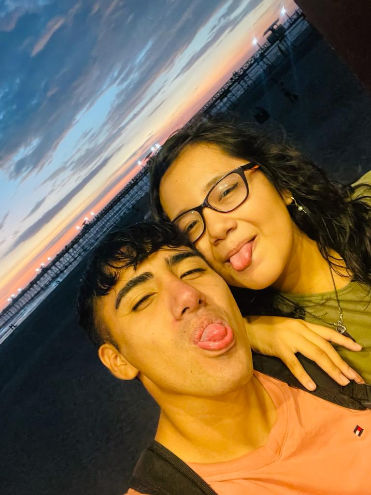
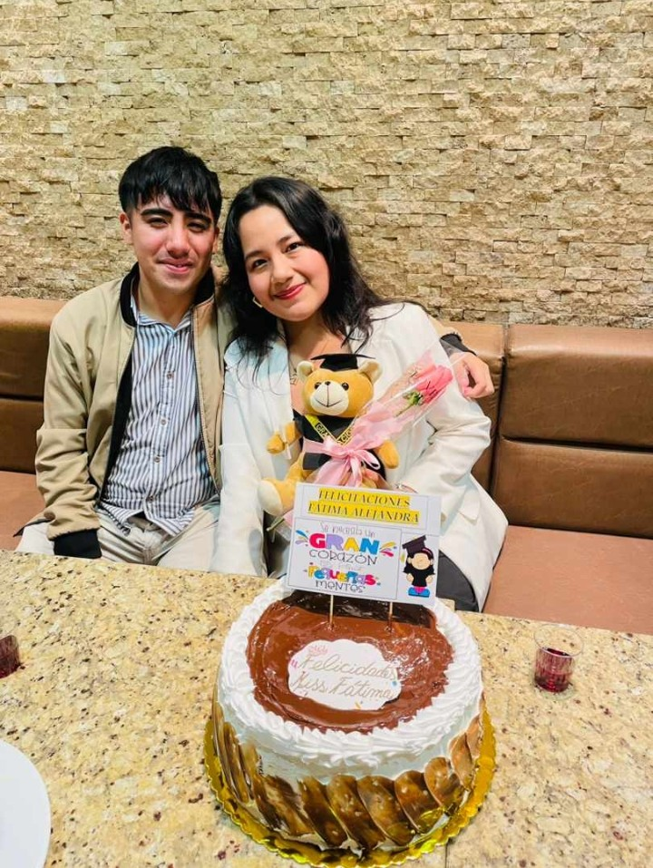
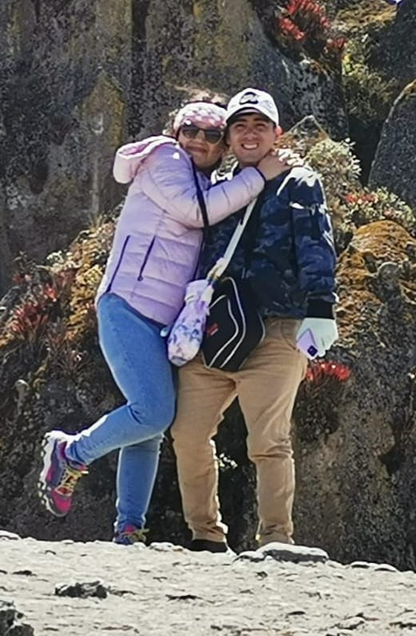
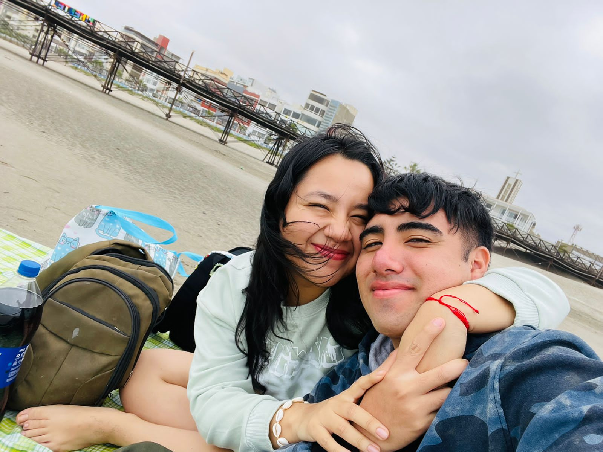
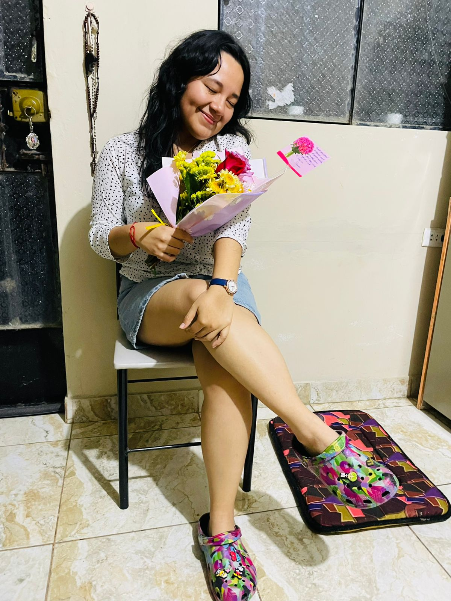
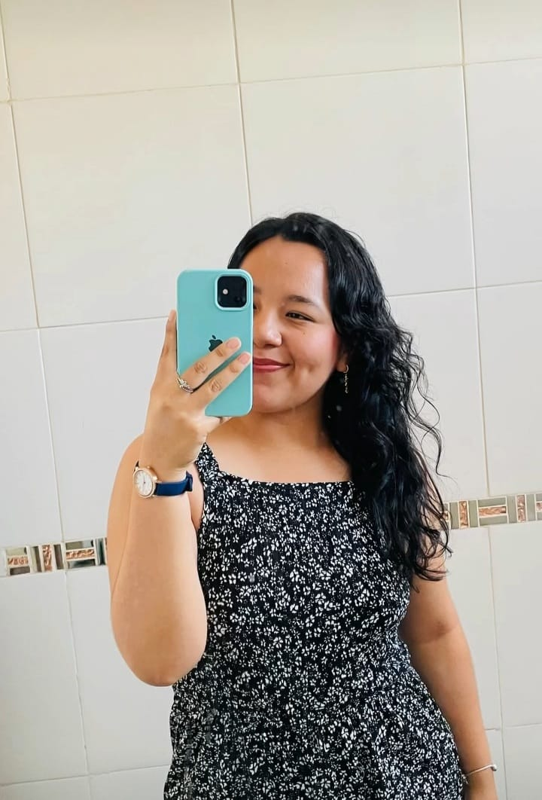
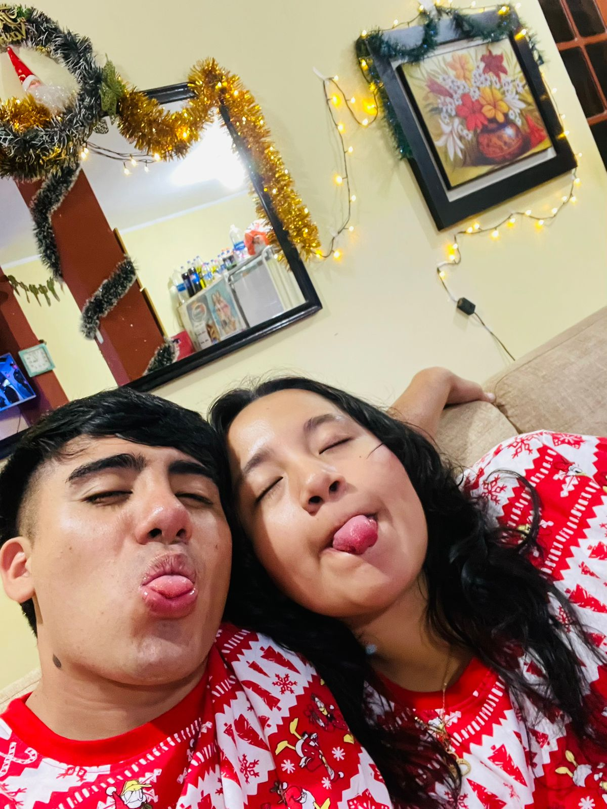
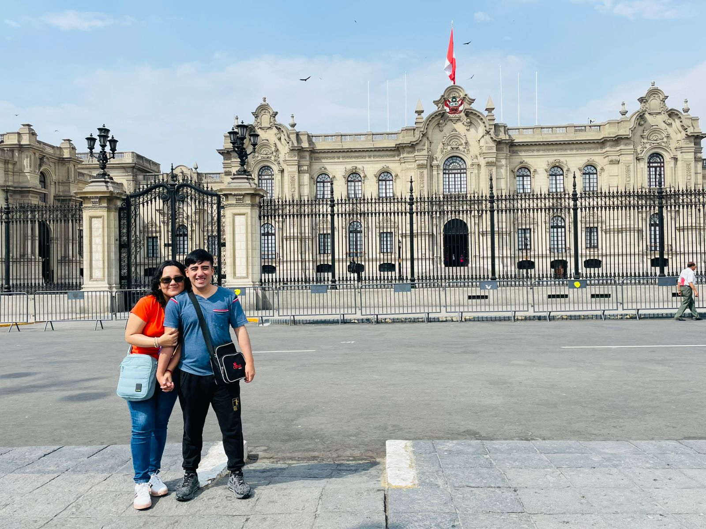
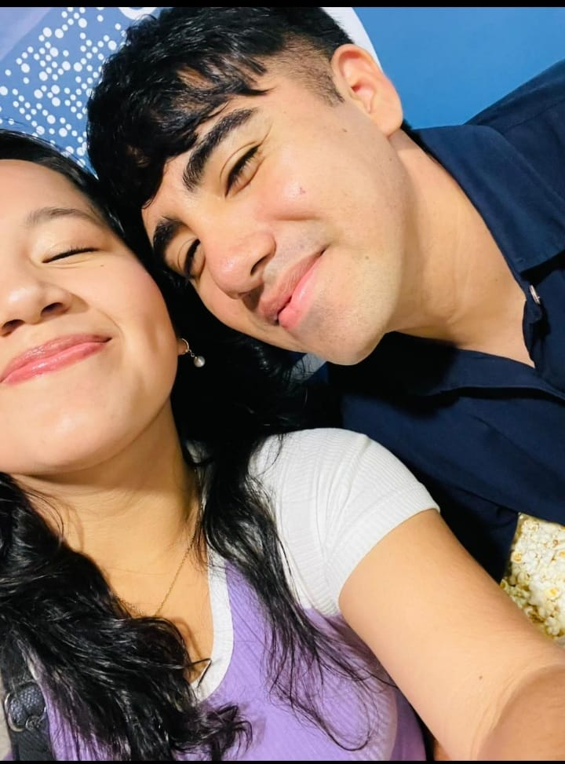
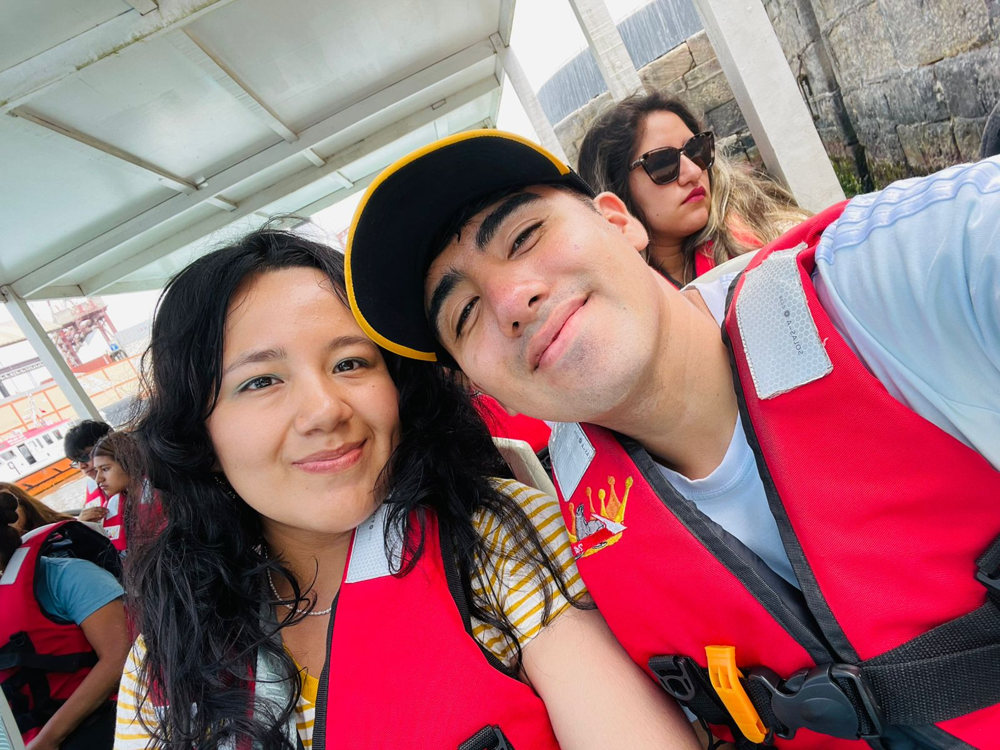

Bueno amorcito, este es un detalle que lo eh hecho con todo mi amor y corazon
un detalle que se que te encantara, lo hice a mi estilo, programando, haciendote detalles con todo
mi amor por ti, recuerdalo siempre, nunca seras espectadora, siempre seras protagonista, TE AMOOOOO ❤️
Selecciona nuestra fecha especial
Nuestra Historia

Recuedo como si fuera ayer el primer dia que te vi, ese dia nunca lo voy a olvidar, ese dia en verdad
fue y sera siempre el mejor dia de mi vida, ese dia yo cuando te vi me quede tan impactado y emocionado de ver a una
mujer tan maravillosa e increible como tu, una mujer bellisima, que a travez de tus ojos transmites ese corazon y personalidad
maravilloso que me enamoro, luego empezamos a hablar a conocerse y mas, no se me notaba pero enserio todos los dias que salia y salgo contigo son tan
hermosos y increibles, pasarla contigo es genial, cuando me levantaste la mano saludandome jajaja, pareciamos muchachos de la secun jaja,
que hermoso momento, para llegar a un momento unico que nunca en mi vida lo vivi y lo hice, el dia que nos fuimos a la playa, ese dia fue increible
y hice lo que nunca me voy a arrepentir haberlo hecho, pedirte que seas mi chica, que seas mi enamorada, mi niña que hace de mis dias hermosos,
ese dia fue unico, por que esperabas tambien tu con ansias que te pida que seas mi chica, wuaoooo fue un dia increible, de noche, los dos sentados, viendo al mar,
disfrutando las olas, un momento tan romantico, que nunca lo vivi ni me declare asi, pero contigo lo hice y fue lo mejor que pude hacer ❤️

Como no recordar un dia tan especial un dia tan increible y maravilloso que es TU GRADUACION, LA CELEBRACION DE UNO DE TUS GRANDES Y MUCHOS LOGROS QUE SE QUE TENDRAS, pero
para ello volvamos unos mese atras, para tu cumpleaños, ese dia quice tanto estar ahi y claro que lo estuve fuen un dia increible pero tambien de muchos nervios, un dia donde
sin haberlo organizado ni exigido conoci a una parte de tu familia, incluyendo a tu padre, no te niego que tambien tuve nervios jaja, pero tan bn y comodo me senti que simplemente
se me paso y hable normal y actue normal, fue un dia hermoso por que conoci a tu bella y hermosa familia y estuve en un momento grandioso para ti, llevando asi al cumple de mi abu,
ese dia nunca lo olvidare ya que ya conocia yo a tu familia mi corazon me dijo presentala a la familia, y que lindo fue ver como mi abuela te abrazo y te tomo de las manos como nunca lo vi hacer,
verte integrarte dia a dia a mi familia, cada reunion, haberte visto bailar con mi madre, que aqui ya te consideren una mas, es tan lindo y hermoso, hermoso saber como todo se da sin exigir simplemente se da,
volviendo asi al dia de tu graduacion un dia bellisimo que no me cansare de decir que nunca lo olvidare por que ahi confirme que tu eres una mujer increible, una mujer intelirente, capaz de lo que tu te propongas
y eso nunca lo dudes que puedes lograr todo lo que quieras y desees, que si tu te entercas lo haces, y eso te define como profesional, en verdad eres mi ejemplo a seguir, un ejemplo maravilloso, un dia inolvidable.
Recuerdo y recordare siempre ese primer viaje que tuvimos, ese viaje tan hermoso que tuvimos, un viaje que no pense que tendriamos pero sabiamos que se iba a dar,
si surgieron varias cosas pero supimos manejarlas, pero lo mejor de todo es que lo pase a tu lado, cada dia, cada paseo, cada video que tengo guardado, cada uno de ello me recuerdo
ese hermoso viaje que tuvimos, esas noche locas jajaja, noches apasionadas, pero tambien esas mismas noches donde por primera vez dormimos juntos, dormimos abrazados como siempre lo emos querido vivir,
de esa manera tan linda e increible que cuando cierro los ojos y lo recuerdo es como si estuviera nuevamente ahi, fue uno de los muchos que tendremos, fue un viaje increible,
un viaje hermoso y bello, un viaje donde cada minuto a tu lado entendi que contigo soy feliz como nunca lo eh sido.

Ese 03/09/2024, ese día único, ese tres donde recordamos dónde todo empezó, ese único momento en el que me sentía yo, que me sentía en paz, ese instante donde disfrutamos juntos de un día increíble,
de un día maravilloso, donde hasta dos perritos se acercaron a nosotros, como si supieran que nuestro amor irradiaba una energía especial.Ese día en el que el mundo pareció detenerse, donde las preocupaciones
se desvanecieron y solo importábamos tú y yo, donde nuestras miradas hablaban más que cualquier palabra, donde cada sonrisa era un reflejo de nuestro amor. Caminamos sin prisa, respiramos juntos ese aire que parecía más puro, más nuestro.
Ese día en el que nuestras manos se buscaban instintivamente, en el que nuestros corazones latían al mismo ritmo, como si fueran uno solo. No importaba el tiempo, no importaba el lugar, porque donde estés tú, ahí está mi hogar.
Ese 3 de septiembre, donde dejamos que, como siempre, nuestros corazones y el amor inmenso que nos tenemos se abracen y se acurruquen de la manera más hermosa y sincera, sin importar nada ni nadie. Un día en el que éramos, somos y
seremos tú y yo, donde cada segundo quedó grabado en mi alma, en mi memoria, en mi ser. Ese día lo tengo siempre en mi mente, lo llevo conmigo a cada instante, porque fue un día único, maravilloso e irrepetible. Un 3 de septiembre del 2024 que siempre vivirá en nosotros. ❤️

Nuestros Momentos

Eres mi princesa hermosa, eres una chica increible, eres ese amor tan unico y hermoso, la unica mujer que quiero en mi vida, siempre te lo voy a decir amor mio nunca te dejaré ser una espectadora en nuestra historia. Eres una
mujer maravillosa, increíblemente fuerte y luchadora, con un corazón lleno de amor y valentía. Cada paso que doy, cada esfuerzo que hago, lo hago con todo mi amor y dedicación, porque tú te lo mereces. Todo lo que hago por ti es
con el corazón, y cada detalle, por más pequeño que sea, lleva una parte de mí. Mi amor por ti es infinito, y lo reflejo en cada acción que realizo, porque lo que más quiero es verte feliz y ver cómo creces cada día.
Tu fuerza, tu pasión y tu increíble capacidad para enfrentar todo lo que la vida te pone por delante me inspiran y me motivan a ser mejor. No solo eres mi amor, eres mi compañera, mi apoyo incondicional, y cada momento contigo es
un regalo. Siempre estaré aquí para ti, para caminar a tu lado y para seguir demostrando, con cada gesto y palabra, lo valiosa que eres para mí.❤️

En realidad cada dia que pasa estoy mas seguro y feliz de la mujer que esta a mi lado, cada dia que pasa estoy tan contento de tenerte conmigo, saber que cuando llegaste a mi vida
le diste un giro maravilloso a mi vida, dia a dia que paso momentos a tu lado, entiendo lo grandioso y hermoso que es el tenerte conmigo, lo feliz que soy a tu lado,
ese momento cuando conversamos tan seriamente hablando de cosas y te quedo mirando, de verdad el amor que tengo por ti revalsa y sale totalmente, cuando beso tu mano y siento esa suavidad que me encanta,
cuando te beso entiendo lo necesarios e importantes que son tus labios y el sentirte tan cerca de mi, tan hermoso, el abrazarte, que proteje mi alma y ma da una paz unica y maravillosa,
esos momentos intimos que solamente tu y yo conocemos, esos dias que solo yo puedo sentirte ser mi mujer, cada que paso mi mano por tu piel o tu linda cara, se siente tan hermoso, para luego terminar siempre viendo
tus ojos y saber que a mi vida ah llegado una mujer que reamente vale la pena, una mujer hermosa, una mujer increible que amooo con mi vida, una mujer espectacular que cada dia amo con locura y mucho amor.
Esa primera navidad juntos, esa navidad que siempre lo soñamos y quisimos vivir amor, esa navidad que siempre recuerdo y ese momento lo siento como si fuera hoy, ese dia fue tan hermoso, se que ps la calentura nos llevo a algo rico,
pero aparte de eso, el estar contigo, teniendo mi chocolatada con el amor de mi vida fue tan increible, supero todas las espectativas que teniamos, como mis mama le gusto vernos juntos, mi papa se acerco a vernos, como fuimos tan felices los dos
acostados viendo peliculas, abrazados ya casi drmiendonos que solamente queria que no se terminara el dia y quedarme asi contigo por el resto de la nohce, entender que a tu lado la paso tan hermoso que en cualquiero otro lado, a tu lado es lo que siempre quiero estar,
vivir esos momentos solo contigo es lo que quiero disfrutar, solo contigo quiero acurrucarme, vivir la navidad con tanto amor y paz, vivir esos momentos unicos tu y yo.

Ese viaje a lima, jjajaja fue tan loco desde el inicio jajaja, pero tambien tan hermoso, por que se dio todo para disfrutar juntos ese gran momento, a la vez te agradesco por permitirme conocer y vivir cosas que nunca lo vivi, viajar en avion,
conocer lima, y muchos lugares de alla que solo veia por tv y no en persona, pero gracias a ti y a tu mami pude vivir ese hermoso momento, pero lo mas lindo es haber tenido nuestro 2 viaje juntos, un viaje maravilloso, un viaje hermoso que nunca olvidare,
como disfrutabamos todos los momentos juntos, y si comparas con el de cajamarca mas mejor, por que simplementa disfrutamos de esa estadia tu y yo, disfrutamos del viaje, vivimos al 100000 cada momento juntos, tomados de la mano, caminando por cada parte de lima, comprando
disfrutando, viviendo bellos momentos juntos, sin importar nada ni nadies, unos 4 dias maravillosos donde fuimos tu y yo, y se que esos no seran los unicos, vendran muchos mas, y viajaremos a muchos lugares, disfrutando de cada momento juntos tu y yo, viviendo aventuras y conociendo cada
rinconcito del mundo, tu y yo solamente ❤️

TE AMOOOOOOOOOO CON TODA MI ALMA PRINCESA
Lo que anteriormente viste fue un resumen breve de todos estos hermosos momentos que hemos vivido, y sé que van a venir muchos más, bb. Momentos que siempre recordaremos y llevaremos en nuestro corazón. Amor, eres lo más hermoso de mi vida, siempre lo diré, y
nunca me cansaré de decirlo. Nunca dejaré que seas espectadora, siempre haré todooo para que seas protagonista. Así, aunque tenga una hora libre, haré especial ese día. Te amo con todo mi ser, te amo cada instante de mi día, de mi vida. Es por eso que te hago la siguiente pregunta: este 14 de febrero... ❤️

¿Quieres ser mi San Valentín?
¡SHIIIIIIIIIIIII, SABIA QUE IBAS A RESPONDER QUE SI MI AMOR! ❤️

Se que sera un dia hermoso, se que lo pasaremos increible, solo vivamos ese hermoso y gran momento juntos, tu y yo, disfrutemos de un 14 increible juntos mi vida,
vivamos ese dia con amor y con el corazon, asi no sea una larga salida pero vivamoslo hermoso juntos bb, vivamos ese dia lindo y maravilloso tu y yo, te amo, y espero
ese dia ansioso mi vida hermosa, eres mi todo corazon. ❤️❤️❤️❤️